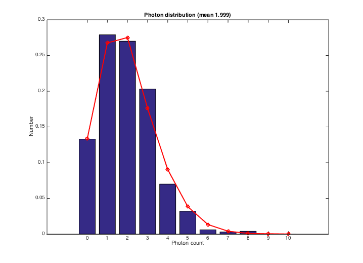

Contents
- t_sensorInputRefer
- A target photon absorption rate for the sensor
- Calculate the photon absorption rate for a 1 cd/m2 at 1 sec
- Calculate the mean photon absorption rate directly from the oi and sensor
- The ISET calculation produces the same mean rate
- Calculate how to adjust the scene luminance
- Compute the photon rate at the new scene luminance level
- Histogram of photon numbers and expected Poisson distribution
- END
t_sensorInputRefer
Illustrates how to calculate the mean absorption rate at the detector given a uniform scene.
Then illustrates how to set the scene luminance of a uniform, equal energy scene to achieve any specified absorption rate.
Hence, when we know the number of electrons in a particular type of pixel, we can estimate the illuminance of an equal energy light at the sensor, or the luminance of an equal energy light in the scene, prior to the optics.
BW ISETBIO Team, 2015
ieInit
A target photon absorption rate for the sensor
tRate = 2;
fprintf('Adjusting to a target rate of %.4f\n',tRate);
Adjusting to a target rate of 2.0000
Calculate the photon absorption rate for a 1 cd/m2 at 1 sec
s = sceneCreate('uniform ee'); lum = 1; s = sceneAdjustLuminance(s,lum); % 1 cd/m2 oi = oiCreate; oi = oiCompute(oi,s); sensor = sensorCreate('monochrome'); noiseFlag = 1; sensor = sensorSet(sensor,'noise flag',noiseFlag); sensor = sensorSet(sensor,'exp time',1);
Calculate the mean photon absorption rate directly from the oi and sensor
% This is a form of the code from signalCurrent.m q = vcConstants('q'); %Charge/electron % signalCurrent estimates volts, like this. We want current to electrons % (which for the human case is current to photons) % % Convert current (Amps) to volts % Check the units: % S * (V / e) * (Coulombs / e)^-1 % https://en.wikipedia.org/wiki/Coulomb % = S * (V / e) * (( A S ) / e) ^-1 % = S * (V / e) * ( e / (A S)) = (V / A) % c2v = sensorGet(sensor,'integrationTime')*sensorGet(sensor,'pixel conversion gain') / q; % % S * (Coulombs / e)^-1 % = S * ( A S / e)^-1 % = e / A c2e = sensorGet(sensor,'integration time')/ q; % Signal current returns Amps/pixel/sec % c2e * Amps/pixel/sec % = (e/A) * (A/pixel/sec) % = e / pixel / sec pImage = c2e*signalCurrent(oi,sensor); fprintf('Direct calculation of photon rate: %.4f \n',mean(pImage(:)))
Direct calculation of photon rate: 3318.4140
The ISET calculation produces the same mean rate
sensor = sensorCompute(sensor,oi); % Get the photons from the first pixel type photons = sensorGet(sensor,'photons'); % In the middle of the image to avoid the edges photons = getMiddleMatrix(photons,[40,40]); % This is the Photon absorptions per exposure (which is 1 sec) pRate = mean(photons(:)); % ieAddObject(oi); ieAddObject(sensor); % oiWindow; sensorImageWindow;
Calculate how to adjust the scene luminance
% Scale the scene luminance newLum = lum * (tRate/pRate); fprintf('Adjusting the scene luminance to %e cd/m^2\n',newLum); s = sceneAdjustLuminance(s,newLum); % 1 cd/m2
Adjusting the scene luminance to 6.024025e-04 cd/m^2
Compute the photon rate at the new scene luminance level
oi = oiCompute(oi,s); fprintf('Through the optics the illuminance is %e lux\n',oiGet(oi,'mean illuminance')); sensor = sensorCompute(sensor,oi); photons = sensorGet(sensor,'photons',1); % Photon absorptions per exposure fprintf('Computed mean photon rate %e\n',mean(photons(:))) % Show the distribution % vcNewGraphWin; hist(photons(:),50) c2e = sensorGet(sensor,'integration time')/ q; % Signal current returns Amps/pixel/sec % c2e * Amps/pixel/sec % = (e/A) * (A/pixel/sec) % = e / pixel / sec pImage = c2e*signalCurrent(oi,sensor); fprintf('Direct calculation of photon rate: %.4f (target = %.4f)\n',mean(pImage(:)),tRate)
Through the optics the illuminance is 2.863757e-05 lux Computed mean photon rate 2.021938e+00 Direct calculation of photon rate: 1.9990 (target = 2.0000)
Histogram of photon numbers and expected Poisson distribution
nSamp = round(max(2*sqrt(tRate)*50,1000)); val = iePoisson(tRate,nSamp); xval = min(photons(:)):max(photons(:)); vcNewGraphWin; n = hist(val(:),xval); bar(xval,n/sum(n(:))); hold on; [n,c] = hist(photons(:),xval); n = n/sum(n(:)); lst = (n > 0); plot(c(lst),n(lst),'ro-','linewidth',2); xlabel('Photon count'); ylabel('Number') title(sprintf('Photon distribution (mean %.3f)',mean(pImage(:))));